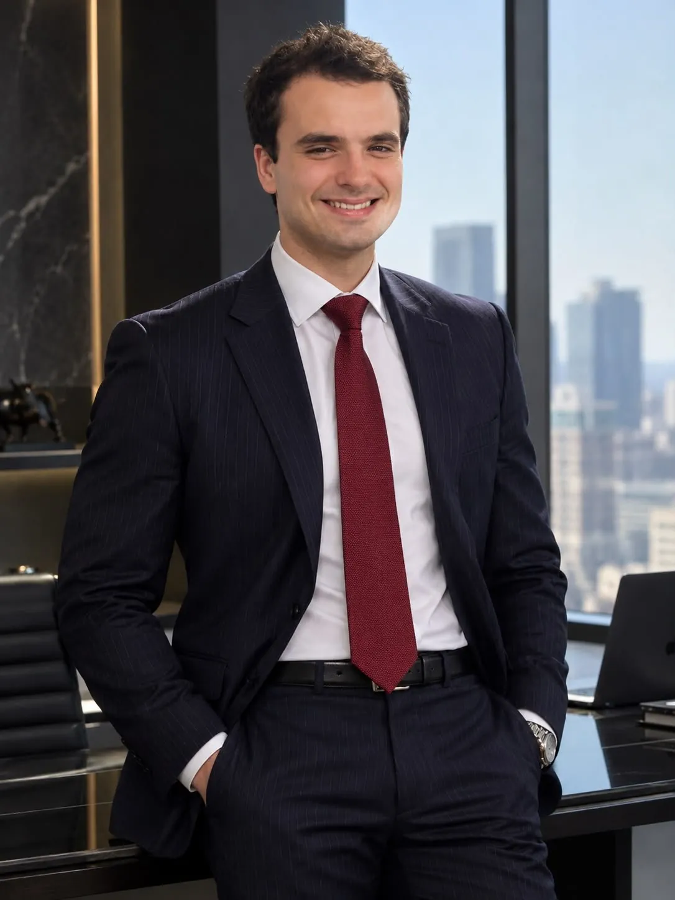
Designer & WebdesignerIdiomas
Inglês
Intermediário avançadoEspanhol
Intermediário
Quem sou eu
Olá, sou o Bruno.
Designer gráfico e webdesigner
Crio a presença visual de marcas que precisam transmitir confiança logo no primeiro olhar: profissionais de saúde, moda e negócios que vivem do Instagram.
Meu trabalho começa no feed, com grades planejadas, carrosséis e destaques, e se estende para identidade visual e sites que mantêm a mesma linguagem do perfil.
Gosto de direção de arte em preto e branco, tipografia com personalidade e de cada detalhe no lugar certo.
Currículo
Minha trajetória
Designer gráfico com mais de 4 anos criando conteúdo estratégico para fortalecer marcas nas redes sociais e mais de 1 ano em UX/UI, desenhando interfaces de apps e sistemas web. Formado em Ciência da Computação, trago um background administrativo e tecnológico da Justiça Federal/PE, do INSS e da Bidweb, e visão de transformação digital vinda de projetos de inovação (FERVO LABI).
Visio Fusion
Designer freelancer
nov 2025 – set 2026Posts e carrosséis para o Instagram de cinco marcas da agência, cada uma com tom e linguagem visual próprios, de arquitetura e natação infantil a móveis, assistência técnica de iPhone e oficina mecânica.
Ressoar Marketing
Gerente de projetos de marketing
fev 2025 – ago 2025Planejamento, organização e execução de campanhas, coordenando equipes, prazos e estratégias para o crescimento das marcas no digital.
Justiça Federal de Pernambuco
Assistente administrativo e de pesquisa
mai 2024 – mar 2025Pesquisas e instruções no Laboratório de Inovação da JFPE, treinando e capacitando servidores públicos.
Bidweb Security IT
Estagiário
out 2021 – out 2022Manutenção e gestão da Bid Academy, plataforma de ensino em segurança da informação: salas online, gestão de usuários, atendimento a alunos e professores e apoio na gestão de pagamentos.
INSS
Estagiário
fev 2017 – mai 2017Atendimento direto ao público e suporte em rotinas operacionais e administrativas.
Ciência da Computação
Bacharelado · Estácio, 2021 – 2025
Do layout ao vídeo
Photoshop, Figma, Premiere e After Effects
Do feed à gestão
Social media, identidade visual, UX/UI, webdesign, gestão de projetos e liderança de equipe
Tecnologia
Tecnologia da Informação e Comunicação · Lógica de Programação
Minhas inspirações
Quem me inspira
Pessoas e personagens que moldam meu jeito de pensar e trabalhar
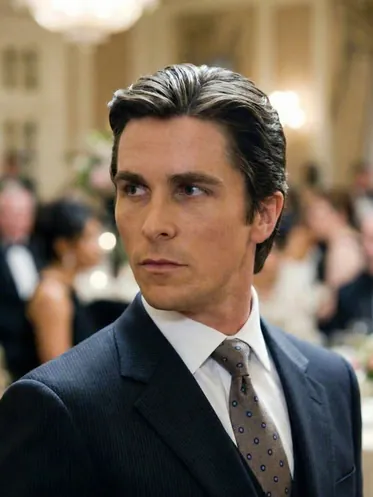
01Bruce Wayne
Christian Bale · Batman
Empresário, gênio e dono de um espírito heroico. Usa a inteligência e os recursos que tem para fazer o que precisa ser feito.
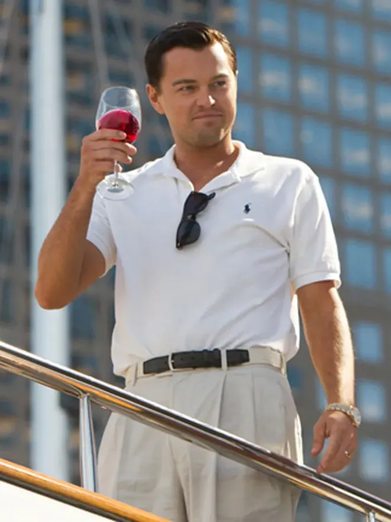
02Jordan Belfort
O Lobo de Wall Street
A sagacidade de vender. Um gênio das vendas que não tem medo de correr riscos para alcançar o sucesso.
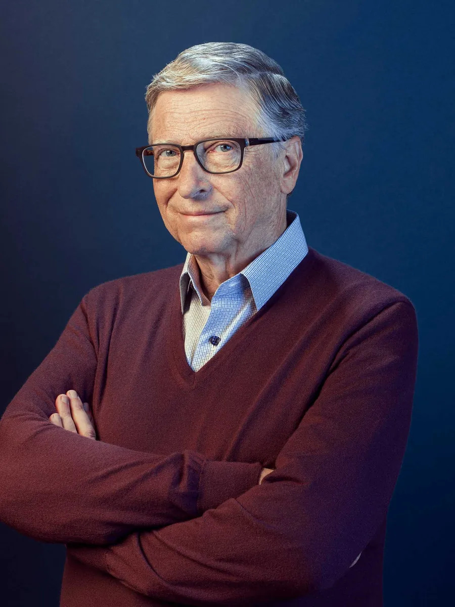
03Bill Gates
Cofundador da Microsoft
Gênio, estrategista e um dos grandes responsáveis pelo que a internet e a tecnologia são hoje.
- 04
Larry Page
Cofundador do Google
Transformou uma ideia de faculdade em uma ferramenta que organiza a informação do mundo. Pensa grande e aposta no futuro.
- 05
Harvey Specter
Suits
Confiança absoluta e talento para negociar. Lê as pessoas, antecipa jogadas e nunca entra numa sala sem saber como vai sair.
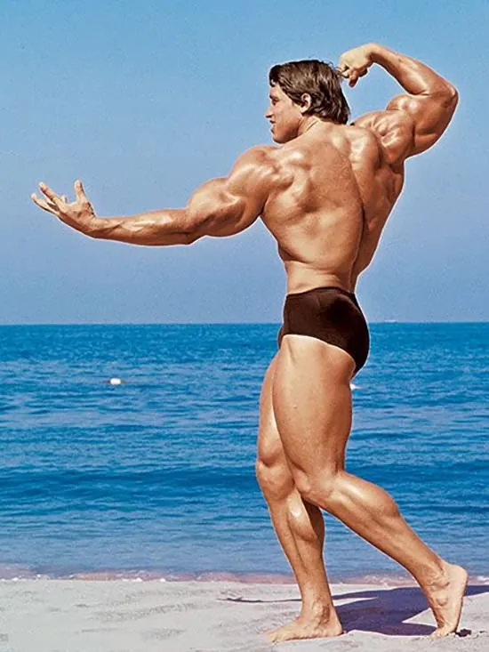
06Arnold Schwarzenegger
Fisiculturista, ator e governador
Disciplina acima de tudo. Construiu a si mesmo do zero e se reinventou várias vezes, do fisiculturismo a Hollywood e à política.
Fora do expediente
Quando eu dou play
Meus jogos favoritos
Nas horas livres eu troco o Figma pelo controle. Curto de tudo um pouco: tiro tático, terror, corrida e mundo aberto. É onde treino reflexo, estratégia e trabalho em equipe, e de onde tiro muita referência visual também.
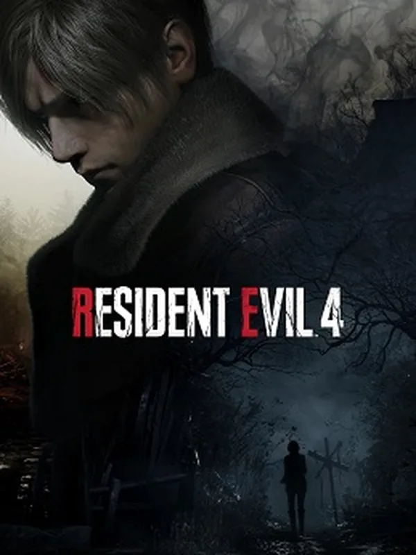
01Resident Evil 4
Capcom · Survival horror
Tensão do começo ao fim. Um vilarejo hostil e uma direção de arte sombria que é aula de atmosfera.
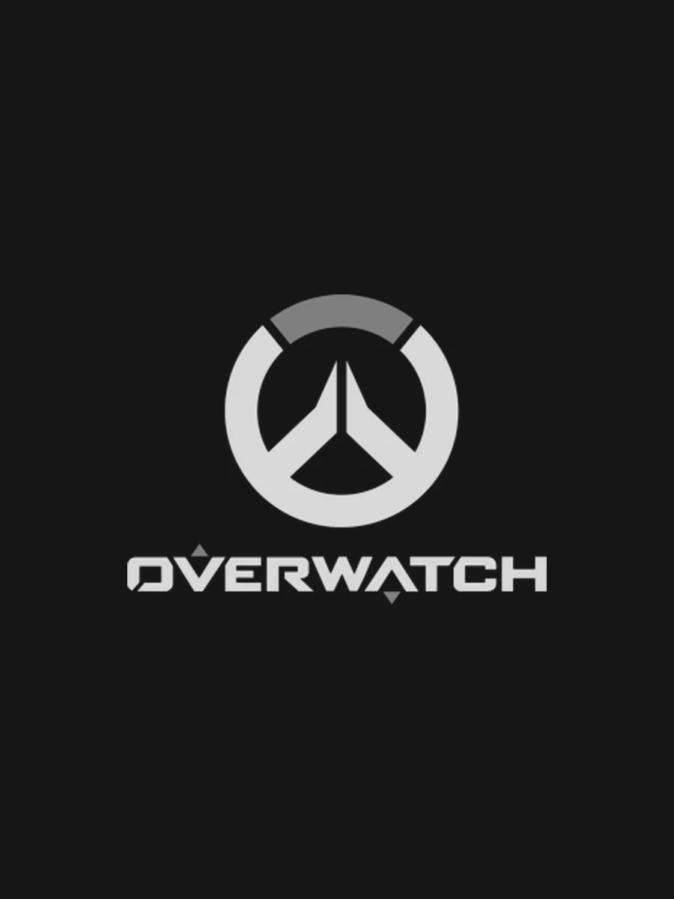
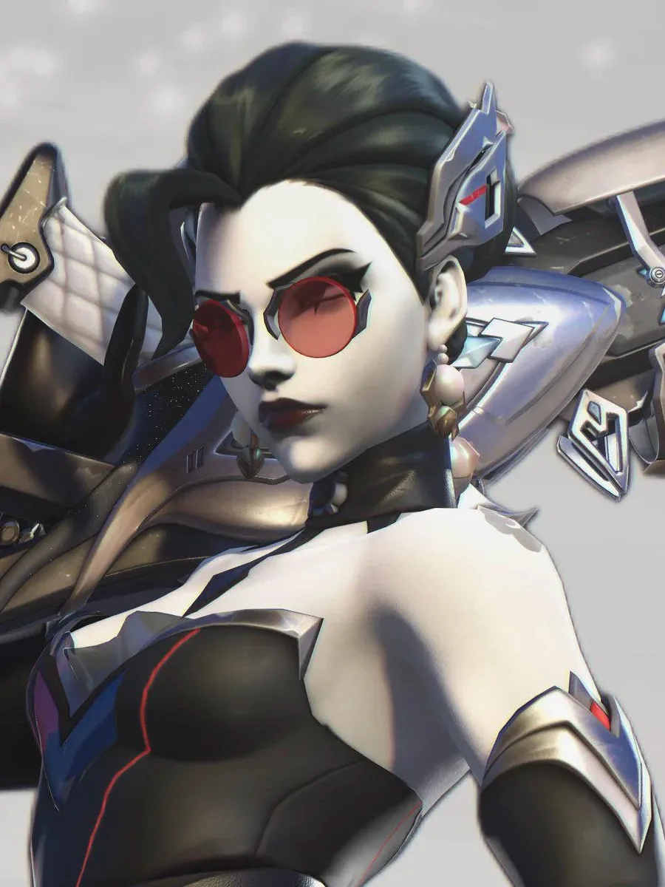
02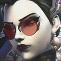
Main · WidowmakerOverwatch
Blizzard · Hero shooter
Jogo de equipe com heróis marcantes. Meu lugar é na Widowmaker: paciência, posicionamento e um tiro certeiro de longe.
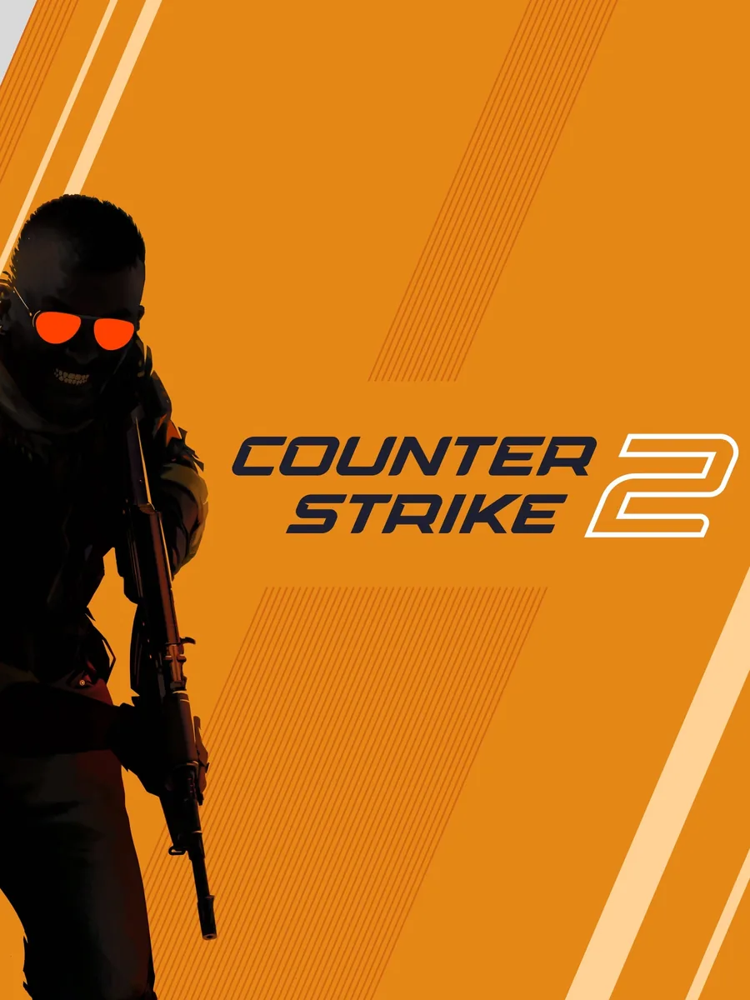
03Counter-Strike 2
Valve · FPS tático
Mira, tática e comunicação. Cada round é uma decisão rápida que pode virar a partida.
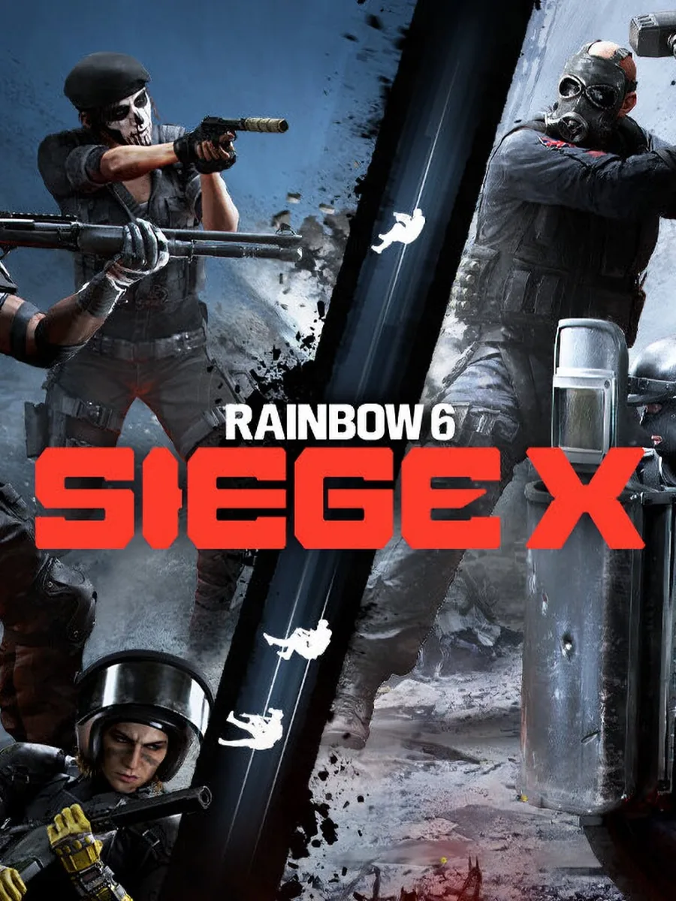
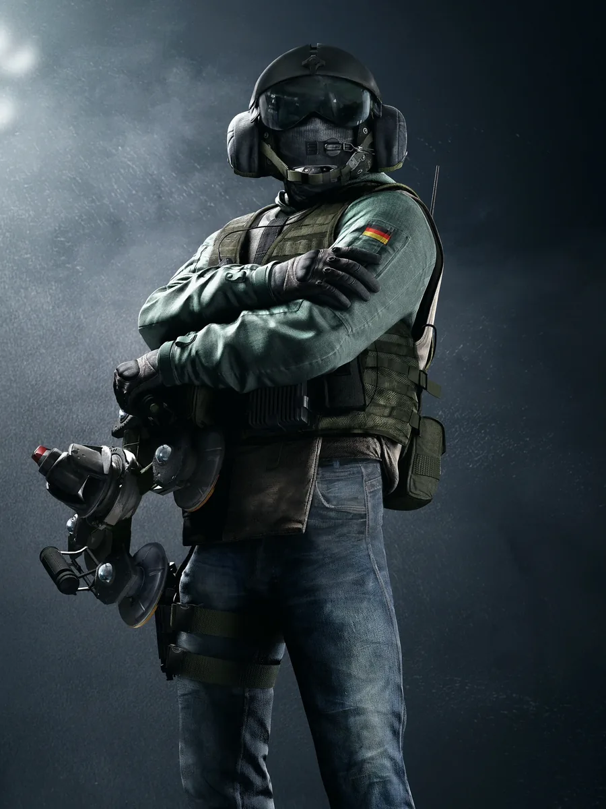
04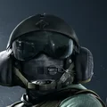
Main · JägerRainbow Six Siege
Ubisoft · FPS tático
Estratégia e paredes que vão ao chão. Na defesa eu vou de Jäger, derrubando as granadas antes que cheguem no time.
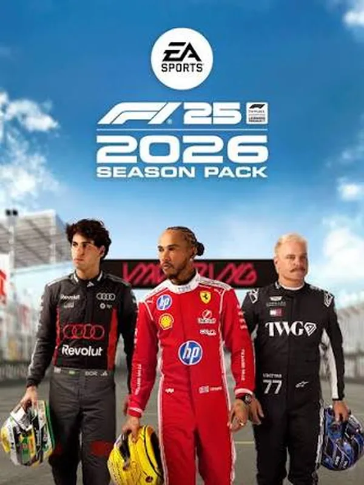
05F1 2026
EA Sports · Corrida
Velocidade, precisão e estratégia de pneus. Cada volta se decide nos detalhes de milésimos.
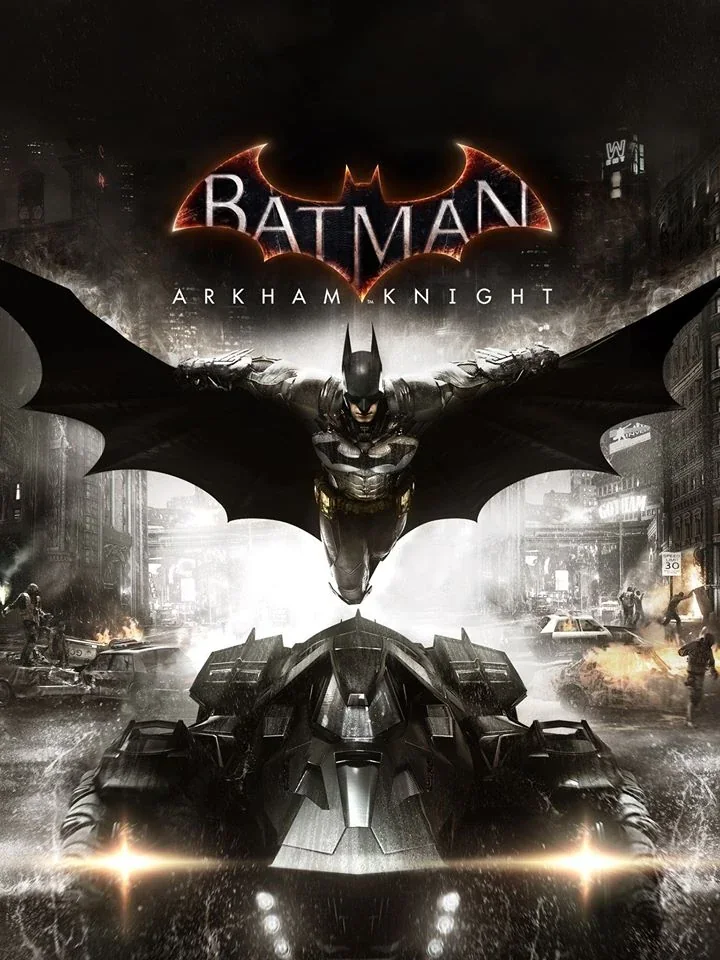
06Batman: Arkham Knight
Rocksteady · Ação e aventura
Gotham no seu momento mais sombrio. Combina com o Bruce Wayne que já me inspira lá em cima.
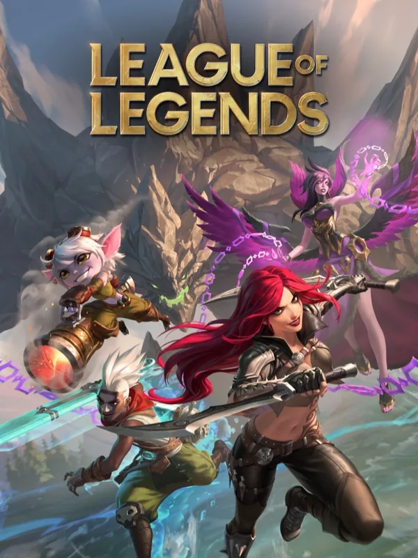
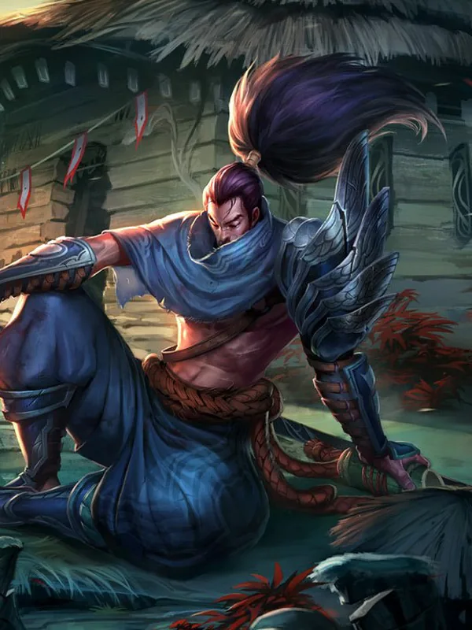
07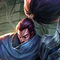
Main · YasuoLeague of Legends
Riot Games · MOBA
Estratégia, leitura de jogo e decisões em segundos. Meu main é o Yasuo: alto risco, muita mecânica e nenhum medo de entrar na luta.
Contato
Vamos conversar?
Respondo por qualquer um destes canais